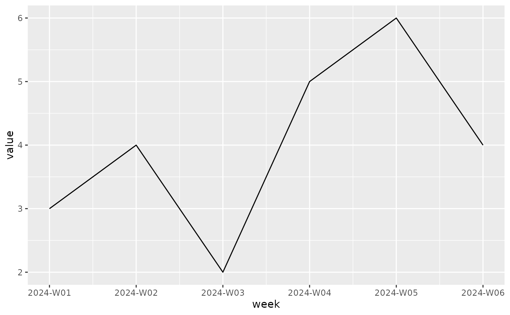
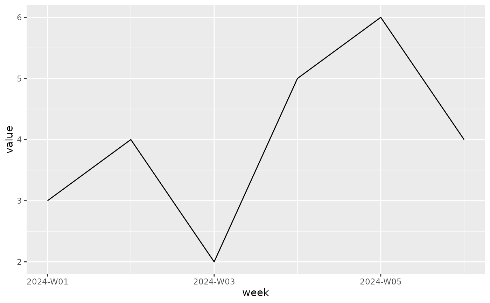

scale_x_weeknumber() and scale_y_weeknumber() create continuous ggplot2
position scales for weeknumber data on the x and y axes.
Usage
scale_x_weeknumber(
name = ggplot2::waiver(),
breaks = ggplot2::waiver(),
minor_breaks = ggplot2::waiver(),
n.breaks = NULL,
labels = ggplot2::waiver(),
limits = NULL,
expand = ggplot2::waiver(),
oob = scales::censor,
na.value = NA_real_,
guide = ggplot2::waiver(),
position = "bottom",
sec.axis = ggplot2::waiver()
)
scale_y_weeknumber(
name = ggplot2::waiver(),
breaks = ggplot2::waiver(),
minor_breaks = ggplot2::waiver(),
n.breaks = NULL,
labels = ggplot2::waiver(),
limits = NULL,
expand = ggplot2::waiver(),
oob = scales::censor,
na.value = NA_real_,
guide = ggplot2::waiver(),
position = "left",
sec.axis = ggplot2::waiver()
)Arguments
- name, breaks, minor_breaks, n.breaks, labels, limits, expand, oob, na.value, guide, position, sec.axis
Passed on to
ggplot2::scale_x_continuous()orggplot2::scale_y_continuous(). See those functions for details.
Details
These helpers use the package's weeknumber transformation so ggplot2 can
plot weeknumber vectors directly while preserving weeknumber values for
break calculations and labels. By default, breaks are chosen from sensible
weekly, monthly-ish, quarterly-ish, and yearly intervals across the displayed
range.
Examples
df <- data.frame(
week = make_weeknumber(2024, 1:6),
value = c(3, 4, 2, 5, 6, 4)
)
ggplot2::ggplot(df, ggplot2::aes(week, value)) +
ggplot2::geom_line() +
scale_x_weeknumber()

ggplot2::ggplot(df, ggplot2::aes(value, week)) +
ggplot2::geom_point() +
scale_y_weeknumber()
